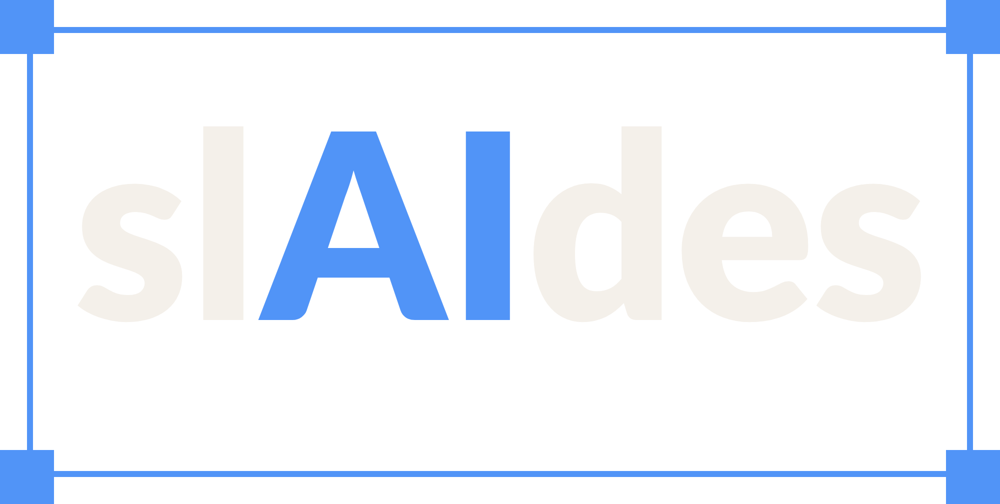
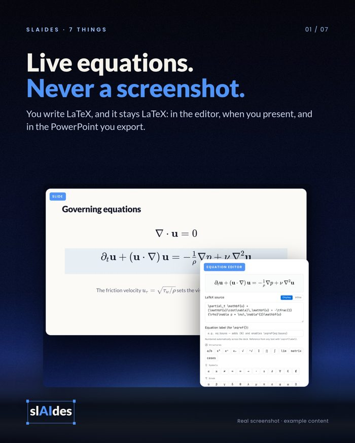
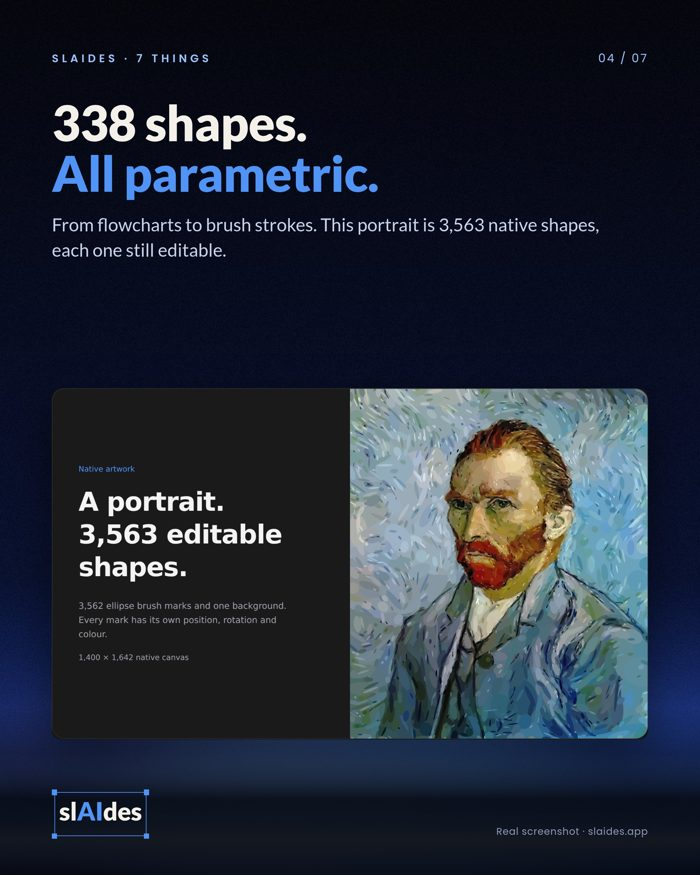
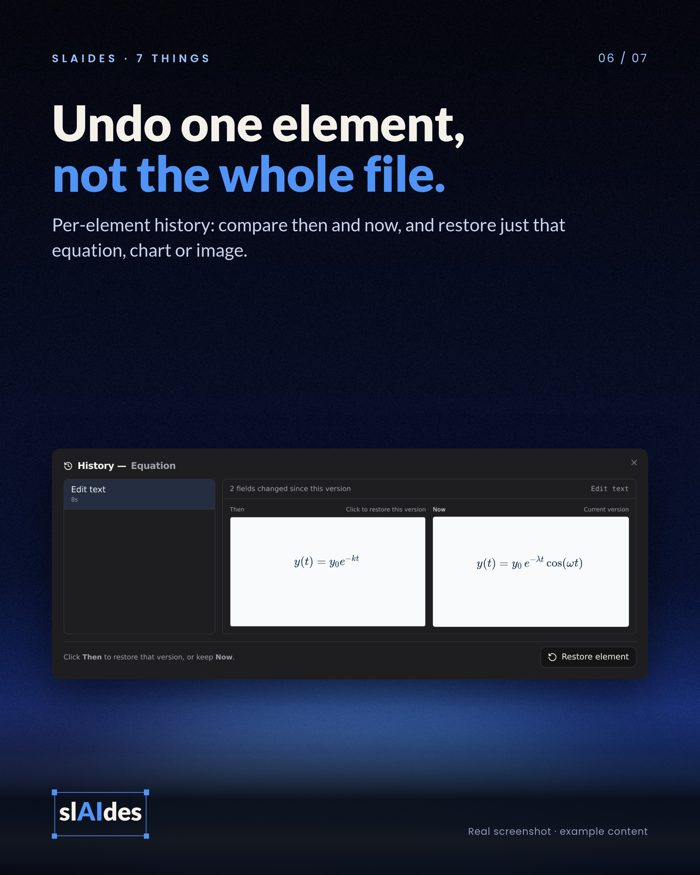

Sovereign AI for expert work.
We build local models that stay with the people and companies who own the knowledge, and software made natively for them, so the expert keeps the data, the model and the decision.
Your knowledge should not have to leave home to be useful.
Today, using AI in expert work means sending your data, drafts and know-how to someone else's model. We think experts and companies should be able to run that intelligence themselves, on their own terms.
-
01 · Models
Local models In development
Models that run where your data lives and are tuned to your field, so what you know stays yours.
-
02 · Software
Native software
Tools designed for those models from the start: typed, checkable operations instead of prompts that produce pictures. An equation stays an equation; a chart keeps its data.
-
03 · Judgment
The expert decides
Every change is visible, revisioned and reversible. The machine proposes; the person who has to defend the result has the last word.
slAIdes works with the assistant you already use, through MCP.
The same software, running on models you can host.
Tuned on your data, on your machines. The software is built for it.

Technical talks where LaTeX stays LaTeX.
Equations, charts, tables and figures stay native objects you and your AI assistant can edit. Every change is a revision. $1.99 per month.



slAIdes
Editor for technical talks.LiveEasyPlotter
Scientific figures you can rerun, inside VS Code.In developmentAgentPortfolio
Auditable portfolio review for public markets.PrototypeGeniusLamp
Structured opportunity review for private markets.Prototype
Mama's Brain on Substack.
Essays on expertise, AI and sovereignty: what the machine gets right, what it gets wrong, and how we design for the expert who has to defend the result.
Two researchers at KTH, Stockholm.
We build the tools we needed for our own research. Bootstrapped. Pilots, research groups and collaborations: msanchisagudo@gmail.com
Marcial Sanchis Agudo
Co-founder
Francesco Mario D'Afiero
Co-founder